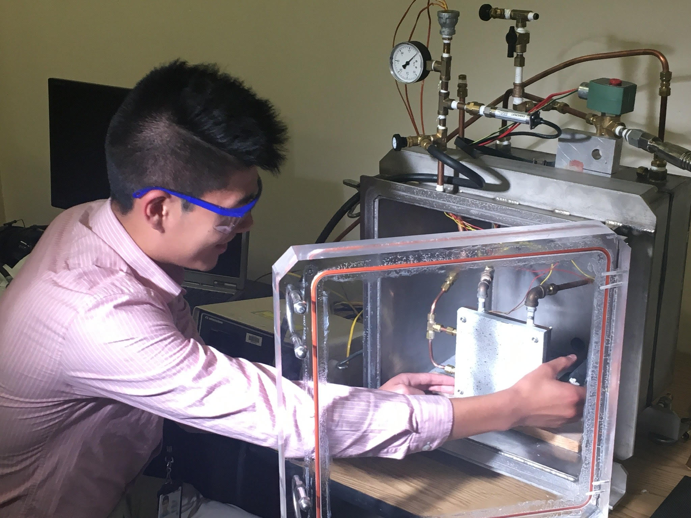
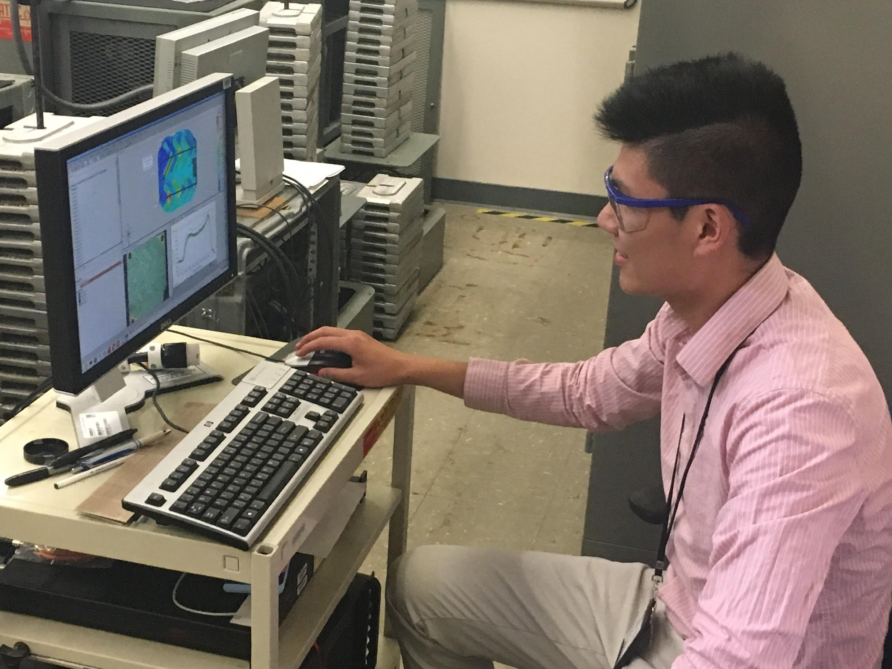
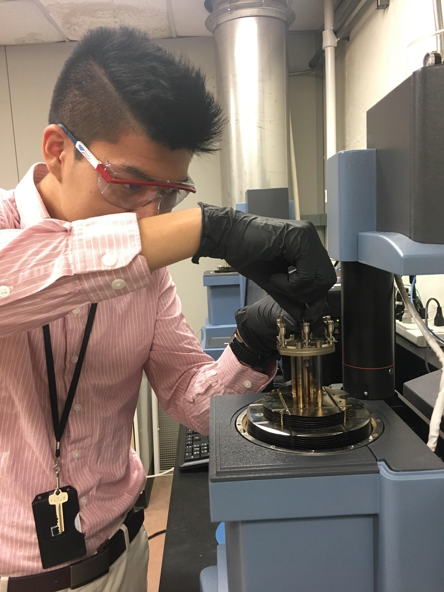

Automated Aircraft Damage Inspection and Tape Bubble Study
May 2019 - Aug 2019
Mentors
|
 |
|  |
BackgroundShortly after aircraft have landed, the maintenance team often discover small pockets of air entrapped under tape between aircraft parts. Current solutions require maintainers to deflate small air bubbles by cutting the tape or sometimes stripping and replacing tape over the aircraft. This process is time consuming and expensive for the Air Force. Maintainers have observed a thin layer of oil on the aircraft as a possible cause. |
Purpose of Research
|
MethodologySimulate changes in altitude through and enclosed chamber on a panel similar to what would be on an aircraft. Manually simulate an aircraft at varying altitude by controlling the pressure and temperature. Using two powerful cameras, take pictures of the panel at various altitude cycles before analyzing tape expansion over gaps using ARAMIS software. |
ResultsResults are pending and conditional to be published based on government approval. Check back later for updates! |
 |